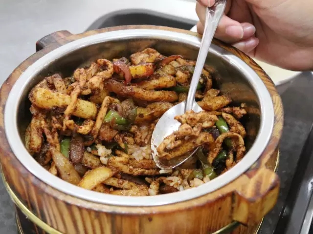
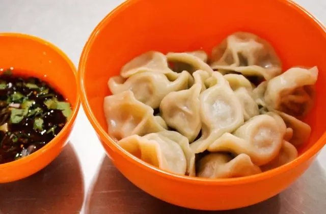
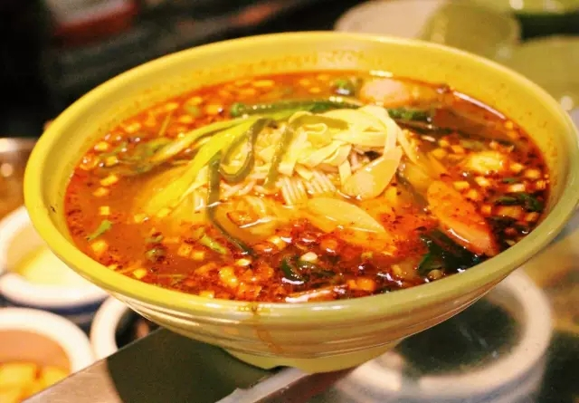
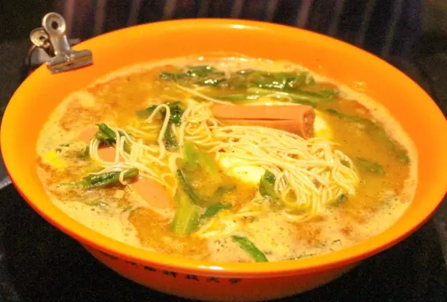
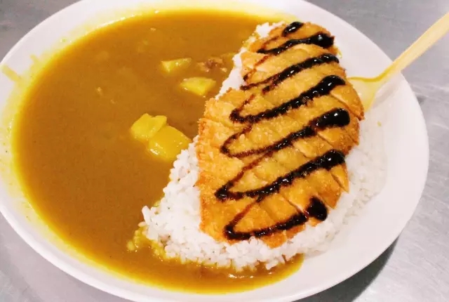
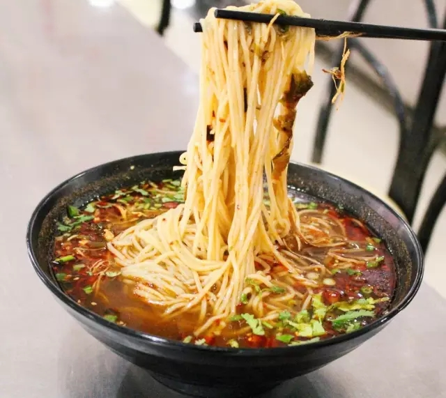
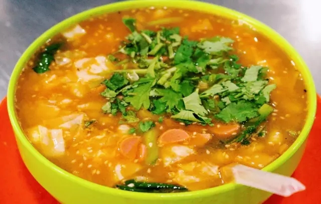

木桶饭
|
 | 肉丝质嫩爽口，油而不腻 米饭粒粒香软，细腻温润 独特浓郁的酱香配料， 勘称十足的“米饭杀手” 典雅的木桶散发着淳厚的木香， 金属盅的完美内嵌， 木桶饭的魅力等你来体验。 |
裤带面 |
 |
在劲道微宽的面条上， 放上些许辣椒， 加上各式作料， 这样的裤带面汁水绝对够味。 唇齿留香的感觉， 也许会让你一再回味。 |
瓦罐汤 |
 |
鲜美的汁水，迷人的色泽。 仅是一缕飘香，勾人垂涎欲滴。 所谓“汤如美酒一饮而尽， 舌舔唇边回味无穷”。 养生肉块与蔬菜的完美搭配， 爽口温润，唇齿留香。 这个秋冬，喝几碗罐罐汤，最适合不过了。 |
玉米面 |
 |
以素菜作主打， 加之鸡蛋作辅菜， 再配上些许辣， 红色辣椒的火辣， 绿色青菜的清淡， 在齿间糅合， 给舌尖一股难以形容的刺激。 |
香锅 |
 |
爆炒之后的浓香， 芝麻的清香， 色泽的鲜艳， 味道的绝味， 美食待你亲自来赏。
|
饺子 |
 | 浓汤、这是传统工艺的体现， 柔软细滑的面皮， 内含精神配置的馅料， 配上清汤, 带你回味春节的快乐。 |
酸辣粉 |
 | 酸酸辣辣的浓烈感， 细细长长的粉条， 易入味， 带给你最初的酸爽， 留给你最后的畅快。 |
冒菜龙须面 |
 | 冒菜的丰富， 龙须面的细长， 糅合在一起的浓腻感， 唇齿留香。 |
咖喱饭 |
 | 咖喱的浓郁， 鸡排的清脆， 土豆的松软， 浓烈的扑鼻芳香， 一场奇妙的美食之旅， 就在此开始。 |
鸡丝面 |
 | 葱段的清香， 辣椒的够味， 配上已经入味的细面， 轻轻品尝后， 似有鸡汤的醇香， 不一样的回味。 |
麻食 |
 | 火腿、香菜、空心的面制品， 主辅料相融，味道浓郁， 筋韧爽滑，荤素均衡， 不知不觉间，一碗见底. |